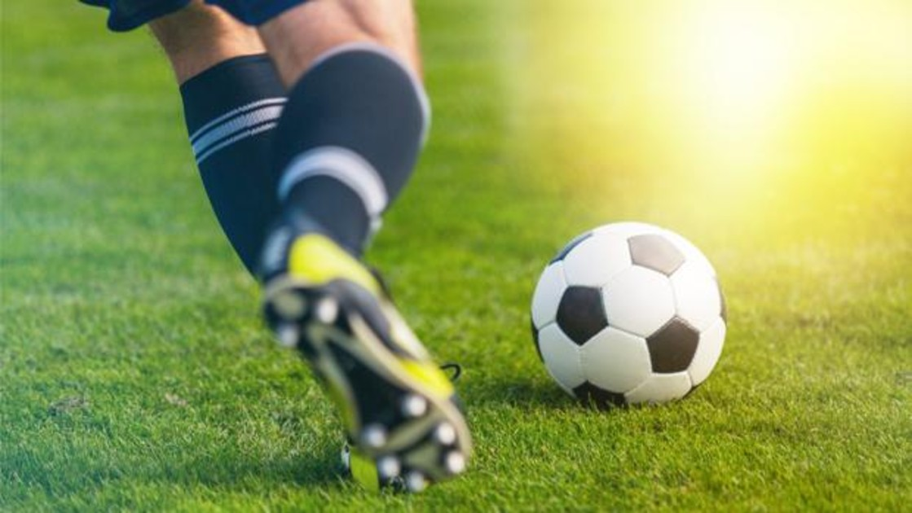

El fútbol incluye una actividad física muy importante. Durante un partido de fútbol profesional de 90 minutos, un jugador, dependiendo de su posición y de las dimensiones del campo, recorre entre 12 y 15 km.8910 También durante un partido de similares características, un futbolista pierde alrededor de 2 kg de líquidos, parte de los cuales son recuperados durante el tiempo de descanso.11 En partidos que se juegan con altas temperaturas, los árbitros tienen el derecho de detener el encuentro, generalmente a mediados de un período, para que los jugadores y el cuerpo arbitral se hidraten. Pero al mismo tiempo, el fútbol es uno de los deportes con mayor número de lesiones,13 aunque la mayoría de ellas no son de gravedad. Las lesiones más comunes ocurren en las rodillas y los tobillos, debido a los movimientos rotativos a los que son sometidos. Las roturas de meniscos y ligamentos cruzados junto a los desgarros musculares, son lesiones habituales dentro del fútbol. Las probabilidades de lesión aumentan cuando el jugador no recibe una preparación física adecuada, particularmente en un deportista aficionado, y cuando el juego se desarrolla sobre un terreno irregular. Para futbolistas profesionales o semiprofesionales es de vital importancia la presencia de un preparador físico que regule el tipo de ejercicio físico, así como la duración y regularidad del mismo. El trabajo del preparador físico se debe complementar con una correcta alimentación, donde también es recomendable la presencia de un profesional en la materia.
| Futvóley alternar el futbol con el volleyball,se practica mucho en Brasil | Fútbol sala El fútbol sala, fútbol de salón, fútsal, futsal o microfútbol;es un deporte colectivo de pelota practicado entre dos equipos de jugadores cada uno, dentro de una cancha de suelo duro. Surgió inspirado en otros deportes como el fútbol, que es la base del juego; el waterpolo; el voleibol; el balonmano y el baloncesto; tomando de estos no solo parte de las reglas, sino también algunas tácticas de juego. Aunque inicialmente estuvo regido por la Federación Internacional de Fútbol de Salón (FIFUSA), hoy existen dos entes mundiales: la sucesora directa de la FIFUSA llamada Asociación Mundial de Futsal (AMF), y la FIFA. | Fútbol Playa El fútbol playa es una modalidad de fútbol que se juega sobre una superficie de arena lisa, entre dos equipos de cinco jugadores cada uno cuyo objetivo es marcar más goles que el equipo contrario. | El showbol El showbol, conocido también como fútbol rápido, futbito, fútbol indoor o fútbol 5, es un deporte mezclado con el fútbol tradicional y el fútbol sala. Tiene la característica que el balón está en constante movimiento ya que el campo de juego está delimitada por una pared; debido a ello también se le conoce como fútbol rápido. | |
| Fútbol a tres bandas El fútbol a tres bandas es una variación del fútbol que se juega con tres equipos en lugar de los dos habituales. Fue ideado por el situacionista danés Asger Jorn para explicar su lógica trivalente, su refinamiento del concepto marxista de la dialéctica, así como para interrumpir la propia idea del fútbol original. Los partidos se juegan en un campo hexagonal, y puede ser adaptado a otras clases de deportes. | Jorkyball El Jorkyball es una modalidad deportiva de fútbol 2 contra 2 que se creó en los años 90 bajo la influencia del fútbol y del squash. Se practica en una pista de 10m x 5m de superficie que esta cubierta de césped artificial y las paredes son de metacrilato. Para jugar se necesitan 2 equipos formados por 2 jugadores cada uno; el objetivo del juego es marcar gol en la portería contraria y para eso se pueden utilizar las paredes de la pista. | Futbolín viviente igual que un futbolín de mesa, pero practicado por personas | Fútbol burbuja Fútbol burbuja (bubbleball o Zorb Fútbol ) es un deporte para jugar al fútbol metido en una burbuja con forma de toro, similar a una esfera, pero en este caso el jugador está cubierto en la parte superior de su cuerpo. Habitualmente se disputa en superficies cubiertas, al aire libre sobre hierba o AstroTurf. Este deporte cada vez se está haciendo más popular en varios países del mundo. | Fútbol en silla motorizada Fútbol en silla motorizada, en inglés Powerchair Football es un deporte en equipo para las personas con discapacidad que utilizan sillas de ruedas eléctricas. Se juega en un gimnasio o en una cancha de baloncesto estándar. Dos equipos de cuatro jugadores cada uno usan su silla equipada con protecciones metálicas para atacar, defender, y golpear una de pelota de fútbol de 330 mm de diámetro, intentando marcar goles. |
| Futgolf trata de colar el balón en los hoyos, como si de golf se tratara | Fútbol freestyle Fútbol freestyle también conocido como Fútbol estilo libre en español, es un deporte-arte (SPART) el cual se practica con un balón de fútbol, mientras se realizan varios trucos con cualquier parte del cuerpo (pies, espinillas, rodillas, manos, brazos, cabeza, etc.). Similar al footbag, kemari o a los malabares de circo con pelotas se ha convertido en un deporte creciente en todo el mundo y es practicado por miles de personas | |||